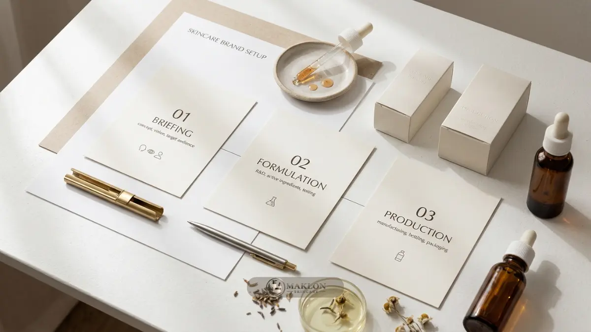

Maklon skincare OEM terbaik adalah pabrik kontrak berizin yang mampu memproduksi skincare sesuai spesifikasi brand Anda dengan kualitas konsisten, legalitas lengkap, dan dukungan setup.
- Maklon skincare OEM adalah jasa produksi kontrak: pabrik memproduksi, brand Anda memegang konsep, merek, dan penjualan.
- OEM memakai formula sesuai spesifikasi brand, sedangkan ODM memakai formula siap pakai milik pabrik.
- Pabrik terbaik dinilai dari legalitas, kemampuan formulasi, kontrol kualitas, MOQ, dan transparansi biaya, bukan dari harga termurah.
- Pemula sebaiknya memulai dari satu sampai tiga produk andalan dan menyiapkan legalitas serta dana pemasaran sejak awal.
Apa Itu Maklon Skincare OEM dan Mengapa Banyak Dipilih Brand Baru?
Maklon skincare OEM adalah jasa produksi kontrak di mana pabrik membuat skincare sesuai spesifikasi pemilik brand, sehingga brand baru tidak perlu membangun pabrik sendiri.
Maklon berasal dari kata "makloon", yaitu jasa produksi bagi pihak lain. Dalam skincare, pemilik brand menentukan konsep, target konsumen, dan spesifikasi produk.
Pabrik mengerjakan formulasi, produksi, pengisian, dan kontrol kualitas di fasilitas berizin resmi.
Minat terhadap bisnis kosmetik memang tinggi. Data BPOM yang disampaikan Kemenperin bersama Perkosmi menunjukkan jumlah industri kosmetik dalam negeri naik dari 1.292 pada 2024 menjadi lebih dari 1.500 pada akhir 2025, dengan sekitar 90 persen berstatus industri kecil dan menengah.
Pendapatan industri kosmetik nasional juga naik dari sekitar Rp21,45 triliun pada 2021 menjadi sekitar Rp31,77 triliun pada 2024, menurut data Kemenperin.
Pertumbuhan itu membuka peluang sekaligus persaingan. Maklon dipilih karena modal awalnya jauh lebih ringan daripada membeli mesin, membangun laboratorium, dan merekrut tim produksi.
Pemilik brand dapat memusatkan energi pada positioning, desain kemasan, konten promosi, dan strategi penjualan di pasar.
Apa Perbedaan OEM dan ODM dalam Maklon Skincare?
OEM berarti brand menentukan formula dan spesifikasi produk, sedangkan ODM berarti pabrik menyediakan formula siap pakai yang tinggal diberi merek, kemasan, dan identitas brand.
Pada skema OEM (Original Equipment Manufacturer), brand membawa konsep atau brief formula yang detail, misalnya bahan aktif hero, tekstur, aroma, dan klaim yang diinginkan.
Pabrik mengembangkan formula tersebut, lalu brand menyetujui sampel sebelum produksi massal. Hasilnya lebih unik, tetapi waktu pengembangan dan biayanya lebih besar.
Pada skema ODM (Original Design Manufacturer), pabrik sudah memiliki katalog formula yang teruji, seperti serum, pelembap, atau pembersih wajah.
Brand memilih formula, menyesuaikan sedikit parameter seperti warna atau aroma, lalu fokus pada branding. Prosesnya lebih cepat dan risikonya lebih kecil.
Banyak pabrik melayani keduanya. Karena itu istilah "OEM/ODM" sering muncul bersamaan dalam penawaran jasa maklon.
Apa Itu Foundation Bisnis dan Setup Brand Skincare?
Foundation bisnis skincare adalah fondasi awal berupa target pasar, positioning, produk andalan, legalitas, dan anggaran, sedangkan setup adalah tahap menyiapkan merek, kemasan, dan operasional penjualan.
Foundation menjawab pertanyaan mendasar sebelum menghubungi pabrik. Siapa konsumen yang dituju? Masalah kulit apa yang diselesaikan? Apa pembeda dibanding brand yang sudah ada? Berapa dana yang tersedia untuk produksi perdana, legalitas, dan pemasaran?
Setup mencakup pembuatan nama dan identitas visual, desain kemasan, penentuan harga jual, pengurusan legalitas usaha, serta pembukaan kanal penjualan seperti marketplace, website, dan media sosial.
Brand yang melewati tahap foundation dengan matang akan memberi brief yang jelas kepada pihak pabrik maklon skincare, sehingga revisi formula dan pemborosan biaya dapat berkurang secara signifikan.
Bagaimana Cara Kerja Maklon Skincare OEM dari Briefing hingga Produk Jadi?
Proses maklon skincare OEM umumnya berjalan dari briefing produk, pengembangan formula, sampel, uji, pengurusan legalitas, produksi massal, hingga pengiriman produk jadi kepada pemilik brand.
- Briefing dan konsultasi: Brand menyampaikan konsep, target konsumen, bahan aktif, dan anggaran. Pabrik menilai kelayakan teknis formulasi.
- Pengembangan formula dan sampel: Formulator membuat prototipe sediaan. Brand menilai tekstur, aroma, dan sensasi pemakaian, lalu meminta revisi bila perlu.
- Uji produk: Formula yang disetujui diuji stabilitas dan mikrobiologi sesuai kebijakan pabrik dan kebutuhan klaim manfaat.
- Legalitas: Produk didaftarkan melalui notifikasi kosmetik BPOM. Sejak 17 Oktober 2026, kosmetik juga wajib bersertifikat halal. Pembagian tugas pengurusan perlu disepakati tertulis dengan pabrik.
- Kemasan dan produksi massal: Setelah pesanan dan kemasan siap, pabrik memproduksi, mengisi sediaan, dan memeriksa standar mutu secara menyeluruh.
- Pengiriman dan evaluasi: Produk jadi dikirim ke gudang brand, lalu brand dan pabrik meninjau hasil untuk evaluasi pesanan berikutnya.
Durasi tiap tahapan bervariasi bergantung pada tingkat kompleksitas formula dan antrean produksi pabrik maklon.

Apa Kriteria Maklon Skincare OEM Terbaik untuk Brand Pemula?
Maklon skincare OEM terbaik memiliki izin produksi dan sertifikat CPKB resmi, rekam jejak formulasi kuat, kontrol kualitas jelas, MOQ sesuai kemampuan brand, serta kontrak kerja sama yang transparan.
Apakah pabrik memiliki legalitas dan CPKB?
Periksa izin usaha industri kosmetik dan penerapan Cara Pembuatan Kosmetika yang Baik (CPKB). Pabrik yang kredibel bersedia menjelaskan status legalitasnya secara terbuka. Pemeriksaan produk yang sudah beredar dapat dilakukan melalui situs resmi BPOM.
Seberapa kuat tim formulasi dan rekam jejaknya?
Minta contoh formula atau portofolio produk yang pernah dibuat tanpa membuka rahasia dagang klien lain. Tanyakan bagaimana pabrik menangani revisi formula dan berapa kali putaran revisi sudah termasuk dalam paket biaya awal.
Bagaimana kontrol kualitas dan konsistensi antar batch?
Tanyakan prosedur pemeriksaan bahan baku, pengambilan sampel batch produksi, dan penanganan produk yang tidak lolos uji mutu. Konsistensi sediaan antar batch menentukan kepercayaan loyalitas konsumen jangka panjang.
Apakah MOQ dan biaya masuk akal dan transparan?
MOQ adalah jumlah pesanan minimum pabrik. Pilihlah MOQ yang tidak membuat stok menumpuk di gudang. Minta rincian biaya tertulis mencakup formulasi, kemasan, uji lab, dan legalitas. Rincian ini dibahas lebih dalam pada panduan biaya maklon skincare OEM dan perhitungan margin profit.
Apakah pabrik mendukung kebutuhan halal dan kerahasiaan?
Pastikan pihak pabrik memahami regulasi kewajiban halal kosmetik dan bersedia menandatangani perjanjian kerahasiaan (NDA) untuk melindungi formula serta konsep eksklusif brand Anda.
Berapa Biaya Maklon Skincare OEM dan Apa yang Memengaruhinya?
Biaya maklon skincare OEM dipengaruhi jenis produk, kompleksitas formula, bahan aktif, MOQ, kemasan, dan layanan legalitas, sehingga angkanya berbeda antar pabrik dan antar produk.
Produk dengan bahan aktif premium atau teknologi sediaan rumit umumnya lebih mahal daripada pembersih wajah sederhana.
Kemasan khusus, seperti botol airless atau dus cetak khusus foil, juga menambah biaya per unit. Sebaliknya, MOQ yang lebih besar sering menurunkan harga per unit, tetapi menaikkan modal awal dan risiko penumpukan stok.
Biaya yang perlu dihitung bukan hanya harga produksi. Brand juga menanggung desain grafis, legalitas izin edar, uji tambahan, penyimpanan gudang, dan promosi.
Karena itu, hitung harga pokok penjualan (HPP) dan margin secara realistis sebelum menandatangani kontrak. Panduan perhitungannya ada di artikel perhitungan biaya dan margin profit OEM/ODM.
Apa Manfaat dan Batasan Maklon Skincare OEM?
Manfaat utama maklon skincare OEM adalah menghemat investasi pabrik dan mempercepat peluncuran, sedangkan batasannya mencakup ketergantungan pada pabrik, MOQ, dan kendali produksi yang terbagi.
Manfaatnya meliputi modal awal lebih ringan, akses ke fasilitas dan tenaga formulator berpengalaman, standar produksi yang sudah berjalan tertib, serta fokus penuh pemilik brand pada pemasaran. Brand juga dapat menambah lini produk baru tanpa harus berinvestasi pada mesin pabrik.
Batasannya perlu dipahami sejak awal. Jadwal produksi mengikuti antrean pabrik. Perubahan formula membutuhkan revisi dan uji ulang.
Kualitas sangat bergantung pada pemilihan pabrik. Perjanjian kerahasiaan dan kepemilikan formula harus jelas agar brand tidak kehilangan kendali atas aset utamanya. Uraian lebih lengkap tersedia di artikel keunggulan maklon skincare OEM dan perbandingan skemanya.
Bagaimana Perbandingan Maklon Skincare OEM, ODM, dan Produksi Sendiri?
Maklon OEM memberi kendali formula dengan modal moderat, ODM memberi kecepatan dengan formula siap pakai, sedangkan produksi sendiri memberi kendali penuh tetapi butuh modal terbesar.
| Aspek Pembanding | OEM | ODM | Produksi Sendiri |
|---|---|---|---|
| Formula | Dikembangkan sesuai brief brand | Formula siap pakai pabrik | Dikembangkan tim sendiri |
| Kecepatan Peluncuran | Sedang | Cepat | Paling lambat |
| Modal Awal | Moderat | Lebih rendah | Paling tinggi |
| Diferensiasi Produk | Tinggi | Sedang | Sangat tinggi |
| Kebutuhan Keahlian Internal | Sedang | Rendah | Tinggi |
| Risiko Pengembangan | Sedang | Rendah | Tinggi |
Brand pemula dengan anggaran terbatas biasanya mulai dari ODM atau OEM sederhana. Produksi sendiri baru lebih relevan setelah volume penjualan stabil dalam jumlah besar dan brand telah memiliki tim teknis laboratorium internal.
Apa Kesalahan Umum Pemula saat Memilih Maklon Skincare OEM?
Kesalahan umum pemula meliputi memilih pabrik hanya dari harga termurah, tidak memeriksa legalitas, membuat terlalu banyak varian, dan tidak menyiapkan dana pemasaran sejak awal.
Harga murah sering menutupi bahan baku yang kurang berkualitas atau layanan kontrol mutu yang minim. Legalitas yang tidak diperiksa dapat membuat produk tidak bisa dijual secara resmi di pasaran.
Terlalu banyak varian di awal membuat modal terpecah dan stok sulit terjual. Banyak pemula juga menghabiskan seluruh dana untuk produksi, sehingga tidak ada anggaran tersisa untuk iklan dan pembuatan konten setelah produk jadi.
Kesalahan lain adalah brief formula yang terlalu umum tanpa spesifikasi terukur, sehingga sampel berulang kali ditolak. Perjanjian tertulis yang tidak jelas soal batasan revisi, jadwal, dan kepemilikan formula juga kerap memicu sengketa di kemudian hari.
Bagaimana Tips Setup Bisnis Skincare dengan Maklon untuk Pemula?
Brand skincare pemula sebaiknya mulai dari satu sampai tiga produk andalan, menentukan target pasar spesifik, menyiapkan legalitas dan dana pemasaran, lalu menguji pasar secara bertahap.
- Fokus pada satu masalah kulit: Brand yang spesifik jauh lebih mudah diingat konsumen daripada brand yang mencoba menjual solusi untuk semua masalah kulit sekaligus.
- Tulis brief formula yang detail: Cantumkan target pengguna, bahan aktif hero, tekstur, aroma, dan klaim realistis. Pembahasan bahan aktif tersedia di panduan formulasi dan bahan aktif hero pada maklon skincare OEM.
- Siapkan legalitas lebih awal: Notifikasi BPOM dan sertifikasi halal membutuhkan waktu proses, jadi masukkan ke dalam kalender jadwal peluncuran brand Anda.
- Produksi secara bertahap: Mulai dari volume minimum yang bisa terserap pasar secara wajar, lalu naikkan kapasitas produksi setelah terdapat data pembelian riil.
- Pelajari contoh nyata: Skenario penerapan pada brand lokal dapat dilihat di studi kasus maklon skincare OEM brand lokal sukses.
- Anggarkan dana pemasaran: Sisihkan dana memadai untuk pembuatan konten, periklanan berbayar, dan layanan pelanggan setelah batch produk tiba dari pabrik.
Konsultasi Maklon Skincare OEM Bersama Tim Kami
Memilih maklon skincare OEM terbaik berarti menilai legalitas, kemampuan formulasi, kontrol kualitas, MOQ, dan transparansi biaya, lalu menyesuaikannya dengan tahap dan anggaran brand Anda.
Langkah praktisnya: tentukan foundation bisnis, pilih skema OEM atau ODM, bandingkan minimal tiga pabrik berdasarkan kriteria tertulis, minta sampel dan rincian biaya, lalu luncurkan secara bertahap.
Siap memulai brand skincare Anda? Hubungi tim kami untuk konsultasi gratis tentang skema OEM/ODM, estimasi biaya, dan tahapan setup yang sesuai dengan konsep brand Anda melalui WhatsApp Konsultasi Maklon Skincare sekarang juga.